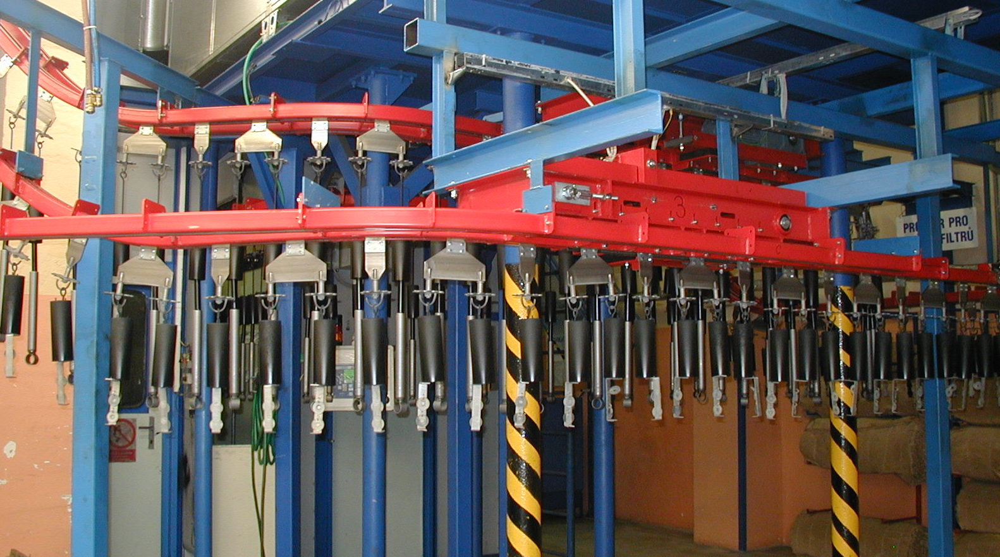

O firmě
Společnost S.O.F. s.r.o. odkoupila na začátku roku 2004 aktiva a práva společnosti Doman Praha s.r.o.
Společnost Doman Praha s.r.o. založili zaměstnanci jednoho odboru Výzkumného ústavu transportních
zařízení.
V tomto odboru byly do roku 1991 zajišťovány vývoj a konstrukce dopravních a
manipulačních
zařízení pro renomované československé výrobce dopravní a manipulační techniky. Máme proto v našem
oboru dlouholeté zkušenosti a rádi je použijeme právě pro Vás. V současné době naše společnost
zajišťuje kompletní dodávky dopravních a manipulačních zařízení na klíč včetně montáže a uvedení do
provozu.
Příklad našeho dopravníku

